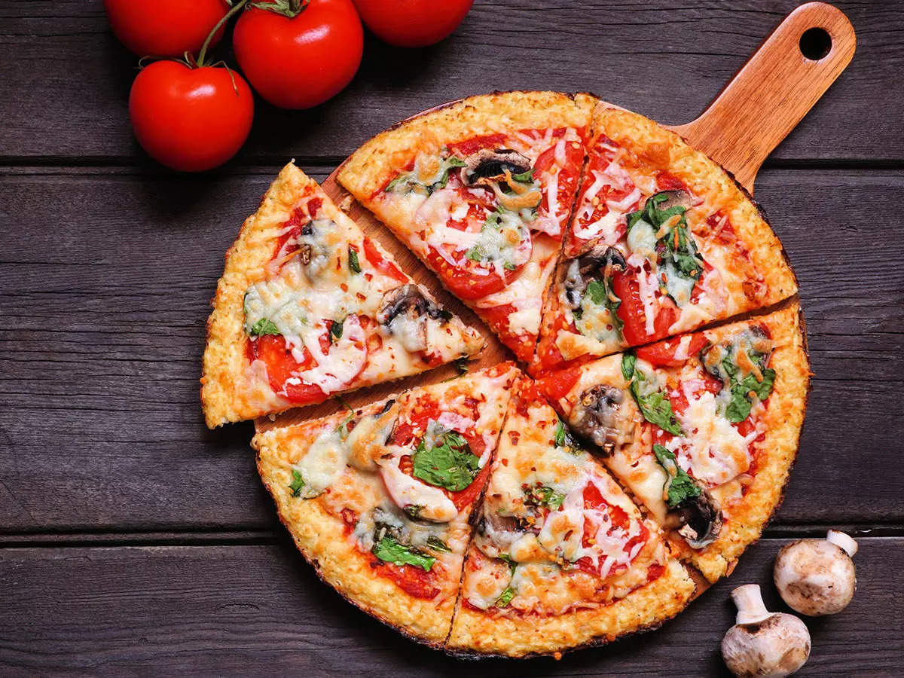

Pizza

Description
Pizza is a dish of Italian origin consisting of a usually round, flat base of leavened wheat-based dough topped with tomatoes, cheese, and often various other ingredients, which is then baked at a high temperature, traditionally in a wood-fired oven.
Ingredients
- 2 cup all purpose flour.
- 100 gm processed cheese.
- 100 ml tomato ketchup.
- 4 mushroom.
- 1 tomato.
- 1/2 capsicum (green pepper)
- 2 onion.
- 1 teaspoon oregano.
Steps
- Start with a solid pizza dough recipe. ...
- Make the dough. ...
- Proof the dough. ...
- Prepare the sauce and toppings. ...
- Shape the dough. ...
- Bake the pizza. ...
- Cool the pizza.